http://www.vassalengine.org/
Current vassal version: 3.2.17
Current vassal version: 3.2.17
That's it. Really. That's the only mandatory file. It contains a few 3x3 starfield maps (classic, light and deep), a teal nebula map (formerly known as blue nebula) and then a bunch of standard black maps (3x3, 4x4, 5x5, 3x6 and 6x3). It contains all ships, pilots, upgrades, tokens, dials currently released in its counterpart tabletop game, and then some, as previews from FFG filter out information to us. Vassal is a great way to try out some of the unreleased, but spoiled stuff from the game.
If you want more variety for the maps, there will be a new unified map pack carrying its own version number: Universal_Map_Pack_1.0.vmdx
The following map packs (and earlier versions) are no longer supported. Please don't use them anymore.
For ease of use and to find your files easily in the future, you can create a
folder inside \My Documents\,
for example: \My Documents\Vassal\
Main module file: it ends with a .vmod file extension (as seen in the download page)
Map extension files: they end with a .vmdx file extension (as seen in the download page). They will be placed in a subfolder at the location of the main module file, (following the example) in \My Documents\Vassal\[--the module name followed by _ext--]\ when they are properly installed.
As an example, for version 5.0.5
This is the contents of \My Documents\Vassal\
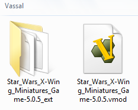
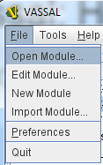
And select your main X-Wing module file. Vassal will then launch it.
If you want to install the map packs immediately, close those new windows and go back to the launcher. Add the map extensions by right clicking your module name in the launcher window and selecting "Add Extension..."
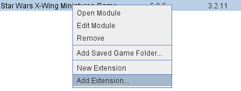
Do this for all map extensions.
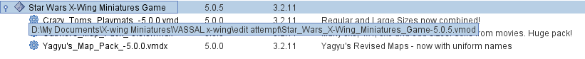
The second step is to simply delete the old .vmod file, which has this appearance:
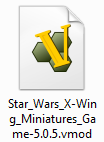
The third step is to download the new file (from the page whose link is under "How to install the x-wing vassal modules for the first time") in that same location.
The fourth step is to go into the vassal launcher window, go to File/Open Module...
Vassal will then attempt to launch the module - close those new windows and go back to the launcher.
The fifth step is to add the map extensions by right clicking your module name in the launcher window and selecting "Add Extension..."
Do this for all map extensions.
 button, which puts a blue exclamation point besides their name in the list of logged in users.
Insert game room title in the "New Game" text field and press enter:
button, which puts a blue exclamation point besides their name in the list of logged in users.
Insert game room title in the "New Game" text field and press enter:

Choose File/New Game

Select one of the players spots (1 to 8) and a map. The vast majority of players use 3x3 maps.
Last step is to simply open up the map window by clicking on the Map button.
First, make sure you zoom the map window to "Fit to Height". This will allow you to check out the side table at the right of the map, if needed. Some players put tokens and templates there and it's useful to keep an access to them.

Second, it's important to free up the neutral area (the map) as much as possible, so try to keep your pilot, upgrade and various chits inside your assigned player window. This is the full list of the windows I recommend keeping open, in a full screen 1920x1080 screenshot:


Here's a checklist of stuff you need in order to build a functional squad for vassal play


Alternatively, you can use the keyboard shortcuts to do this much faster.
Important: you can always clone a ship by clicking on it (left mouse button), hitting Ctrl-C, then dragging the copy away from the original. This saves time when you have multiples of a ship type in a squad.

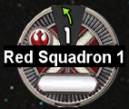
The proper way to use the dials during the planning and activation phases of the game is the following:

Some players enjoy rotating the dials, as it gives you an easier time to visualize the proper direction for turning ships when they're facing downward, for example. Do this by clicking on the dial and hitting the left or right arrow keys.
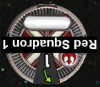
Way #2: (heartily recommended) through the usage of keyboard shortcuts. There is a certain logic to their definitions
Forward moves:
Bank moves:
Turn moves:
Koiogran moves:
How do you manage to remember all this? You can always check up on shortcuts under the button "Quick Ref", under "Ship Shortcuts". 
Another way to spawn bigger tokens that are manageable by way of drag and dropping, you can go to the Pieces Window, under the Chits tab.
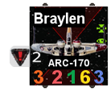
Way #1: more tedious, but more intuitive. Spawn enough tokens from the "Pieces" window under "Chits/Tokens". This is tedious because you'll have to manually put tokens during the activation phase, then take out every unused focus and evade tokens during the end phase. There is a faster way.
Way #2: (heartily recommended) Ships have space for 3 "action declarations". As always, you have access to this in their right click contextual menus, but here are the shortcuts:


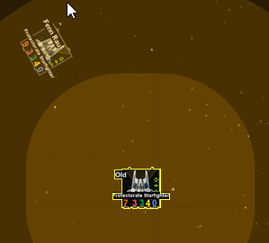
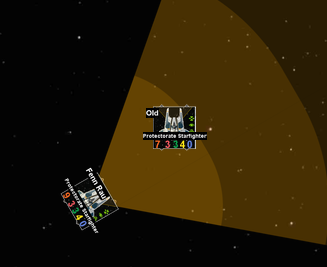
Attacking: click on the graphic that shows a bundle of red dice and hit Ctrl-(a number) to roll this amount of dice. For example, Ctrl-3 will roll 3 attack dice:
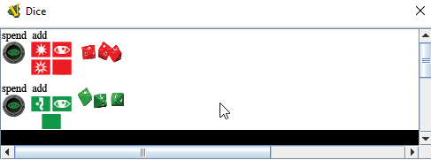
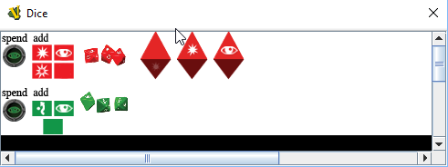
Modifying attack dice results:
Defending: click on the similar green graphic and use the same kind of shortcut, Ctrl-(a number):
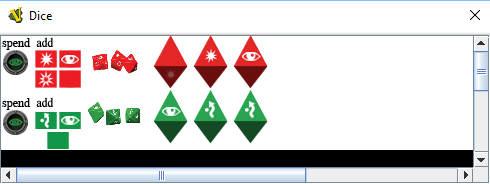
Modifying defense results:
Keeping a lock link between 2 ships: spawn a target lock token with the "Pieces" window, under Chits/Tokens. Spawn 2 tokens. Change the color for one of them to blue (Alt-C). Rename the tokens with Alt-L. Move those tokens manually during play.
Spending a focus or an evade token: Remove them from your ship's action bars (Shift-A, Ctrl-A or Shift-Ctrl-A) and you may also click on "spend focus" in the dice window to automate the modifications of a roll result.
When you take damage to the hull (past shields), the game expects you to draw damage cards. Each player can spawn their own damage deck to their player window, then drag and drop cards from it, to their respective player hands as damage accumulates on the ship. This is on top of modifying the ship values on the ship pieces on the map.
As for critical damage, it is customary to draw the appropriate card on the map, flip it (Ctrl-F) there and wait for some acknowledgement from your opponent. On the map, every player can then mouse-hover the card and see a zoomed version of it, allowing to read it easily. If you spawn and flip the card in your player hand window instead, only you can benefit from the mouse-hover zoom.
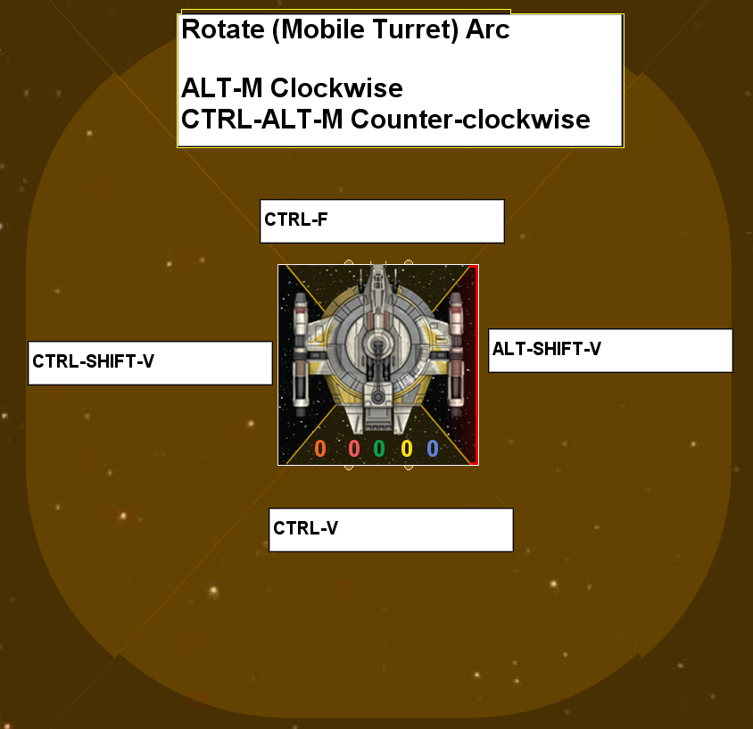
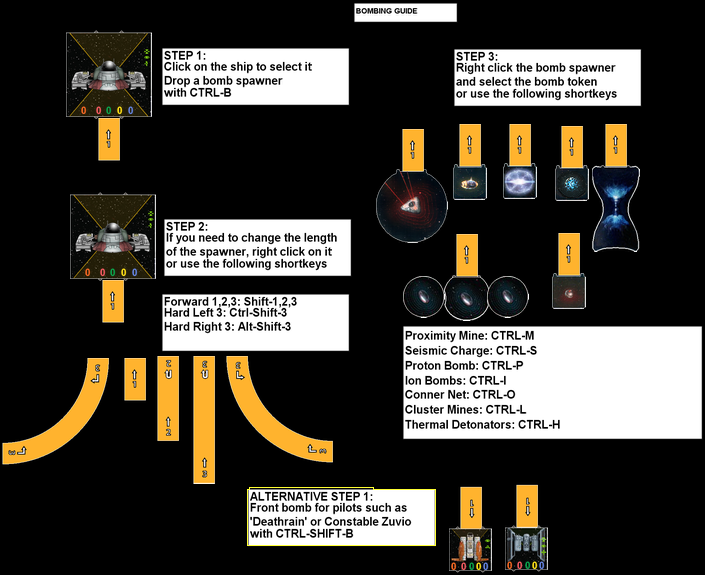